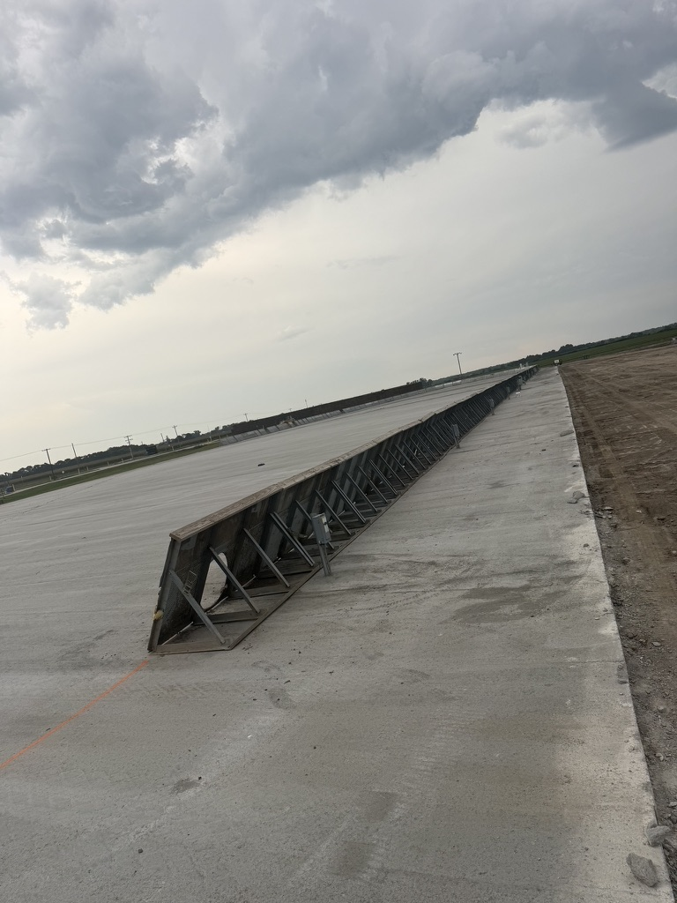

RCC Paving Considerations for Twin Falls, ID
Twin Falls and the surrounding Magic Valley support agriculture and food processing alongside industrial and commercial activity. Facility pavement planning can consider delivery routes, loading areas, employee access and the movement between production and storage.
Request an Estimate →Coordinate production access with yard circulation
Processing and distribution sites may combine frequent truck movements with service vehicles, staff parking and utility access. A coordinated layout accounts for turning, loading, pavement transitions and drainage before the pavement type and section are selected.
- FeedlotFeed and livestock sites should coordinate equipment loads, cattle or feed movement, cleanout access and water management in the pavement plan.
- Grain StorageStorage pads and handling areas can be arranged around delivery paths, equipment reach, loading points and a clear drainage strategy.
- Commercial & IndustrialFood processing and industrial yards can separate heavy deliveries, shipping lanes, staff access and service circulation for project review.
- MunicipalFor public pavement, coordinate access and work phases with utilities, drainage, adjacent streets and the governing agency requirements.

Plan for deliveries, loading and site continuity
For a Twin Falls-area facility, note which routes serve ingredients or product deliveries, where trucks queue, and how traffic reaches docks, storage and service areas. Also map drainage, irrigation infrastructure, utilities and any sections that must remain accessible.
RCC may suit some heavy-duty pavement applications, but suitability depends on engineering, site conditions, project requirements and construction planning. Contact our team to discuss the operating needs of a proposed site.
Request a Quote →